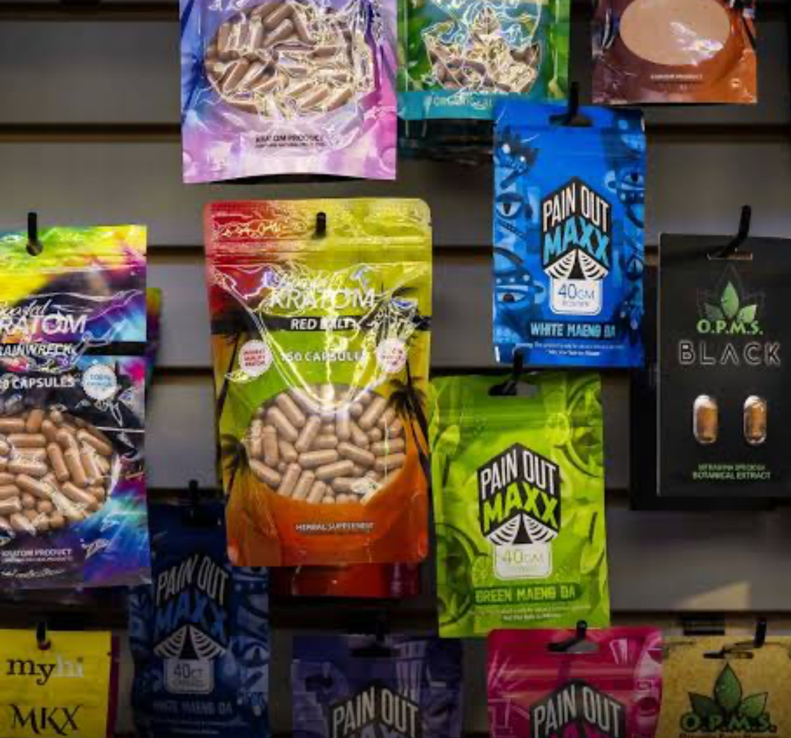
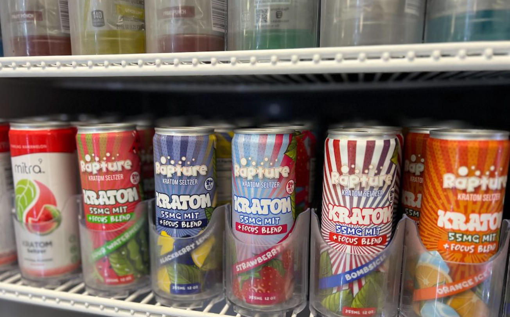

Kratom is sold as a “natural herb,” but once it’s in the body, part of it can turn into 7-hydroxymitragynine (7-OH) — a chemical that locks onto the same brain receptors as strong prescription pain medicine. That means kratom can cause opioid-like effects, including dependence and withdrawal, even when the package looks harmless.
Acts on “pain pill” receptors. In the body, kratom’s main ingredient (mitragynine) can convert into 7-OH, which attaches to the same brain receptors as strong prescription pain medicine.
Marketed as safe and “natural.” Products are sold as teas, capsules, powders, “energy” drinks, and gummies — often right next to candy, snacks, and vapes.
Linked to real harm. Poison centers and medical reports describe dependence, withdrawal, and, in some cases, deaths where kratom was involved.
Not approved medicine. The FDA has not approved kratom for any use and warns that kratom products may be contaminated, mislabeled, or deliberately strengthened.
You don’t have to be a toxicologist to protect your kids. Start with what it looks like, what to watch for, and what to do if something feels off.
What it looks like. Kratom powders, capsules, gummies, and drinks marketed as “energy,” “focus,” “relax,” or “herbal mood boosters.” Labels may say kratom, mitragynine, or strain names like “Maeng Da.”
Warning signs. Very small pupils, unusual sleepiness (“nodding off”), nausea, constipation, sweating, or shaking. Some teens feel anxious, restless, or can’t sleep when they stop using it.
If someone is in trouble. For extreme sleepiness, slowed breathing, or trouble waking up, call 911 immediately. For questions or non-emergencies, call Poison Control: 1-800-222-1222.
How to start the conversation. “I know this is sold like a supplement, but your body can turn it into something that acts like strong pain medicine. I’m not here to punish you — I just don’t want anything to blindside you because it looked ‘natural.’”
Kratom doesn’t look like a “drug.” It’s packaged to blend in with snacks, supplements, or energy drinks — which is why so many parents never notice it on shelves. These are real photos of kratom products sold in U.S. gas stations, vape shops, and convenience stores.


These short clips show how kratom is marketed, where teens encounter it, and why it’s confusingly packaged like harmless energy drinks or supplements.
Short-term effects. Euphoria, extra energy, slower reaction time, tightness in the chest, dizziness, or “spacing out.”
Long-term effects. Cravings, constipation, high tolerance, mood swings, anxiety, and difficulty sleeping without it.
Withdrawal signs. Shaking, sweating, stomach cramps, vomiting, irritability, insomnia — often identical to withdrawal from strong pain medicines.
High-risk groups. Teens looking for energy, focus, stress relief, or “natural” alternatives; college students during exam periods.
Print this one-page kratom guide to share with schools, coaches, pediatricians, relatives, and other parents.
Download: MAHA Kratom Parent Handout (PDF)
Myth: “It’s just a plant, so it’s safer than pills.”
Fact: The body can turn kratom into chemicals that act like strong prescription pain medicines. “Plant-based”
does not mean safe — it only describes where the chemical came from.
Myth: “Kratom is a safe way to get off opioids.”
Fact: Doctors are now treating people who became dependent on kratom itself. Some need medications like
buprenorphine/naloxone to come off kratom, just as they would for other addictive drugs.
Myth: “If it were really dangerous, it wouldn’t be sold in stores.”
Fact: Cigarettes, vaping products, and alcohol are also sold in stores. Store shelves are not safety
endorsements, especially when oversight is weak and labels can be misleading.
Myth: “The dose on the label is accurate.”
Fact: Independent testing has found big differences between what labels claim and what products contain,
including contamination and added substances that aren’t listed at all.
1. Scan your environment. Check gas stations, vape shops, and convenience stores in your area. Notice where kratom is placed and how it’s labeled. If you can, take photos for your own reference.
2. Check at home and in the car. Look in backpacks, glove compartments, center consoles, bathroom drawers, and trash bins for bags, capsules, shots, or cans labeled “kratom,” “mitragynine,” “Maeng Da,” or “leaf extract.”
3. Share what you’ve learned. Send the downloadable handout to another parent, coach, school counselor, or pediatrician. Most adults have never seen what these products really look like.
4. Talk early, talk often. Keep the conversation going: “If you ever see this stuff at school or online, I want you to feel safe telling me. We’ll figure it out together.” Curiosity is normal — secrecy is what makes these products dangerous.